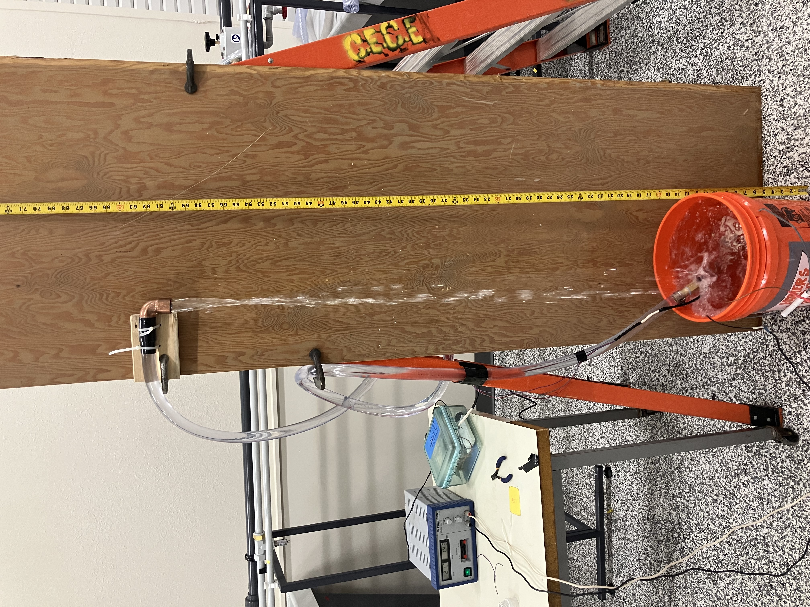
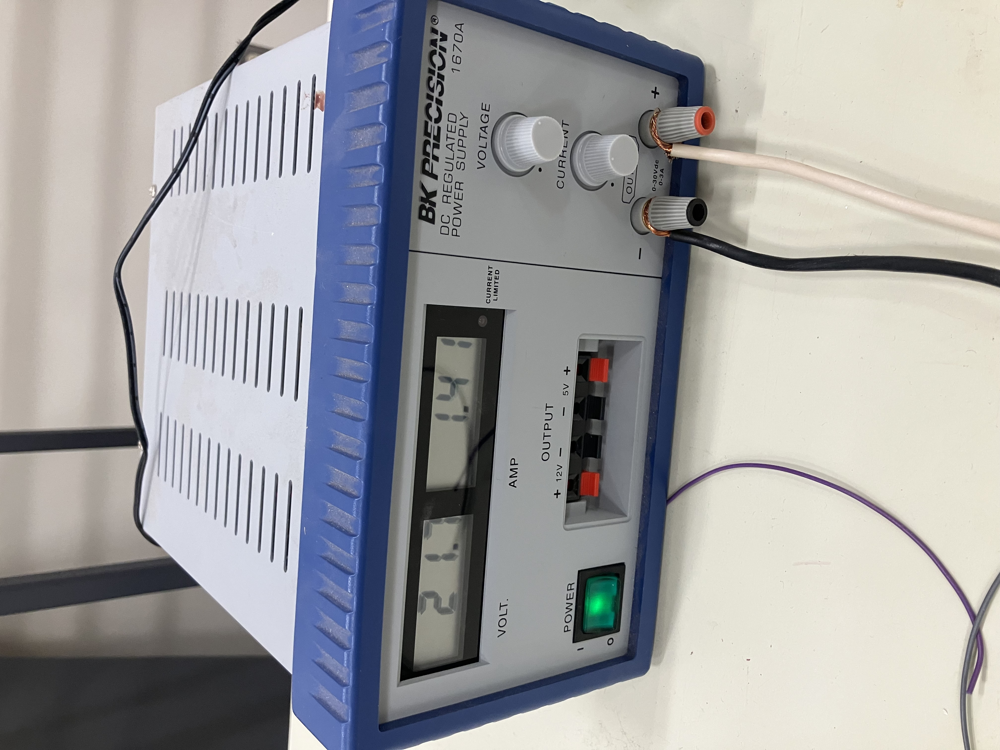

Pump Performance Curve#
Course Website
This laboratory determines performance characteristics of a small pump in various flow configurations.
Readings#
General Readings about Pumps
Objective#
To experimentally determine the relationship between discharge (Q), head (H), and power input (P) for a small DC pump operating at variable discharge elevations. Students will produce a pump curve (H vs Q) and evaluate power consumption.
Background#
A pump curve is a graph showing how the head (H) produced by a pump varies with flow rate (Q).
Key Concepts:
Total Dynamic Head (TDH) supplied by the pump is determined using the modified Bernoulli equation.
Flow Rate (Q) is measured in L/min by the time-to-fill method.
Electrical power input (P) for the DC pump is computed using: $\( P = V \times I \)$ where V is voltage and I is current.
(Optional) Efficiency can be estimated by:
\[ \eta = \frac{\rho g Q H}{P} \]where \( \rho \) is water density and \( g \) is gravity.
Modified Bernouli Equation:
For constant diameter pipeline, and discharge into the atmosphere the equation becomes
The velocity is determined from the measured flowrate and pipeline inside diameter. If expressed in discharge form (for circular conduits)
Reynolds’ Number:
To determine \(f\) the Reynolds’ number is needed:
Friction factor:
The friction factor can be approximated using:
Roughness height \(k_s\)
The roughness height is found using Roughness Height Database or other suitable literature reference.
Apparatus#
Warning
Need to update photographs below
The experimental set-up is comprised of:
5.5V DC pump
Variable power supply (current limited)
Flexible discharge pipe (I.D. = 0.3 inches)
Thermometer
Ruler or measuring tape
Water container
Stopwatch
An image of the system in operation is shown below

The current-limited power supply is visible on the left; flow is determined by time-to-fill. The discharge outlet can be moved to different locations above the supply tank to produce a pump curve. There is considerable splash and overflow, so a hose (not pictured) is used to keep the orange tank always full, ensuring a constant head at the supply location.
Experimental Setup#
Connect pump to water reservoir.
Attach flexible pipe.
Elevate discharge outlet to some convienent height.
Measure and record the water temperature.
Measure Q (by time-to-fill; 3 measurements - compute average)
Measure H the distance from the water surface to the outlet elevation.
Record power supply voltage V and current I. Make note if current limiting light is illuminated.
The figure below is a close-up of the power supply. In the figure the voltage is read from the left display, and current from the right display. The current can be limited by the experimenter - in current limited conditions a small red indicator appears in the display.

Procedure#
Fix power supply voltage (3.3 - 5.5V).
Set current limiter to 0.0 A then slowly increase until flow begins. Continue to increase until current limiting light is off.
Begin with lowest discharge height that you can fit a beaker underneath to make a time-to-fill reading.
Measure Q (by time-to-fill; 3 measurements - compute average)
Measure H the distance from the water surface to the outlet elevation.
Record power supply voltage V and current I. Make note if current limiting light is illuminated.
Increase height and repeat steps 4-6.
Obtain at least 5 heights, stop when you reach shutoff height or highest possible elevation that the vertical beam allows.
Deliverables#
Laboratory Report documenting the actual experiments, and other required content including
Completed data table
Graphs (H vs Q and optionally P vs Q)
Fitted pump curve equation The report discussion should answer
How does head change as flow rate increases?
How does power efficiency (\(\frac{\rho g Q H}{P_{electric}}\)) relate to flow rate?
Is there a location \(Q\) on the pump curve where efficiency is highest?
Would this pump be suitable for a head requirement of 1.2 m?
What measurement errors may affect your results?
%%html